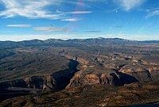
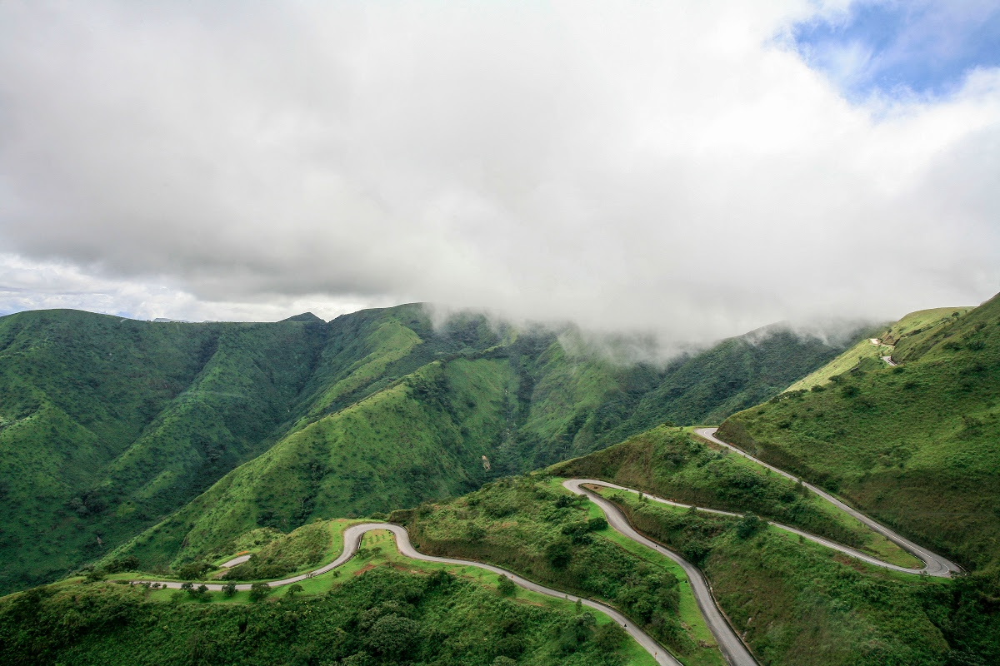
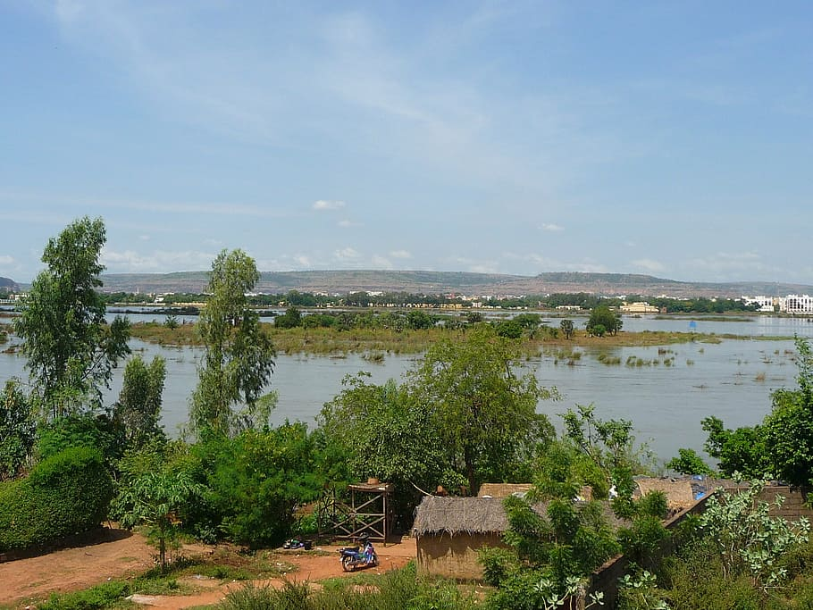

Landforms| Major Waterways| Overall Climate| Resources| Religion| Technology| Government & Politics| Family| Arts & Entertainment| Education| Recreation| Food & Clothing| History| Economy|

Major Landforms:
Some examples of the major landforms of Nigeria are the Adamawa Plateau, Mambilla Plateau, Jos Plateau, Obudu Plateau, the Niger River, Benue River, and Niger Delta.

Adamawa Plateau

Obudu Plateau

Niger River